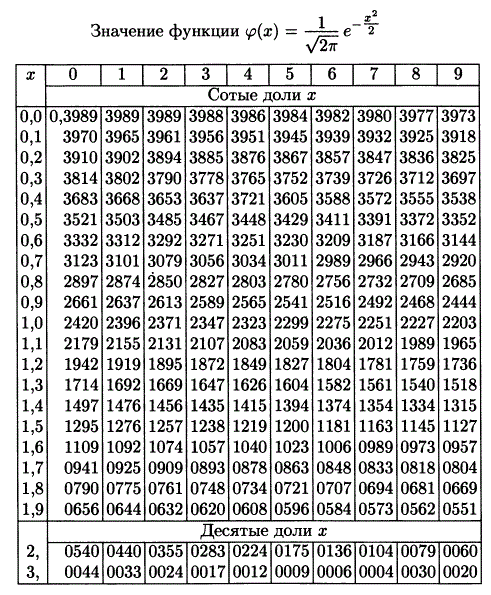

Теория вероятностей
Основано на лекциях Чанги Мориса Евгеньевича.
Элементарный исход, событие, относительная частота события, классическая и геометрическая вероятности.
Множество элементарных исходов $\Omega$ - множество, содержащее все возможные результаты эксперимента, из которых в результате происходит ровно один.
Элементарный исход - элемент множества элементарных исходов. $\omega\in\Omega$.
Событие - подмножество множества элементарных исходов. $A\subset\Omega$.
Относительная частота события $A$ - отношение количества опытов, в которых произошло событие $A$, к общему числу испытаний.
Классическая вероятность события - отношение количества элементов множества события к количеству элементов в множестве элементарных исходов.
Пусть $\mu$ - мера множества (длина, площадь, объём или др.). Тогда: Геометрическая вероятность события $A$ равна отношению $\mu(A)$ к $\mu(\Omega)$.
Аксиоматика алгебры событий, аксиомы вероятности. Вероятностное пространство.
Множество событий называется алгеброй событий, если $\forall A,B\in\mathscr{A}$ выполняются следующие аксиомы:
- $A+B\in\mathscr{A}$;
- $A\cdot B\in\mathscr{A}$;
- $A\backslash B\in\mathscr{A}$;
- $\Omega\in\mathscr{A}$.
Числовая функция $P(A)$, определённая для любого события из алгебры событий, называется вероятностью события $A$, если:
- Аксиома неотрицательности: $\forall A\in\mathscr{A} P(A)\geq0$;
- Аксиома нормированности: $P(\Omega)=1$;
- Аксиома аддитивности: $A\cdot B=0\Rightarrow P(A+B)=P(A)+P(B)$. То есть вероятность суммы несовместных событий равна сумме их вероятностей;
- Аксиома непрерывности: если $A_1\supset A_2\supset\ldots A_n\supset\ldots$ и $\prod_1^\infty A_n=\varnothing$, то $\lim_{n\rightarrow\infty}P(A_n)=0$.
Тройка $(\Omega,\mathscr{A},P)$ называется вероятностным пространством.
Условная вероятность, умножение событий. Независимые, несовместные события.
Пусть $N$ - число опытов; $N_A$ - число опытов, в которых произошло $A$; $N_{AB}$ - число опытов, в которых произошли и $A$, и $B$. $$\frac{N_{AB}}{N_A}=\frac{\frac{N_{AB}}{N}}{\frac{N_A}{N}}\Rightarrow P_A(B)=\frac{P(AB)}{P(A)}$$ Условной вероятностью $P_A(B)$ называется вероятность события $B$ при условии, что произошло событие $A$.
Теорема об умножении событий: $$P(A_1\cdot A_2\cdot\ldots\cdot A_n)=P(A_1)\cdot P_{A_1}(A_2)\cdot P_{A_1A_2}(A_3)\cdot\ldots P_{A_1A_2\ldots A_{n-1}}(A_n)$$ События $A$ и $B$ называются независимыми, если $A\cdot B=0$. События $A$ и $B$ называются несовместными, если $A+B=0$.
Полная группа событий, формула полной вероятности. Формула Байеса.
События $H_1,H_2,\ldots,H_n$ составляют полную группу событий, если они попарно несовместны, а их сумма равна множеству элементарных исходов.
Формула полной вероятности: $$P(A)=\sum_{i=1}^nP(H_i)\cdot P_{H_i}(A)$$ Формула Байеса: $$P_A(H_i)=\frac{P(AH_i)}{P(A)}=\frac{P(H_i)P_{H_i}(A)}{P(H_1)P_{H_1}(A)+\ldots+P(H_n)P_{H_n}(A)}$$
Схема Бернулли, теорема Бернулли. Теорема Пуассона.
Схема Бернулли - последовательность независимых испытаний, в каждом из которых возможны два исхода - успех и неудача.
Пусть $n$ - количество испытаний; $p$ - вероятность успеха в одном испытании; $q=1-p$ - вероятность неудачи в одном испытании, $P_n(m)$ - вероятность $m$ успехов в $n$ испытаниях.
Теорема Бернулли: $$P_n(m)=С_n^mp^mq^{n-m}$$ Теорема Пуассона: Пусть $n\rightarrow\infty$, $p\rightarrow0$, $np\rightarrow\lambda$. Тогда: $$P_n(m)=\frac{\lambda^m}{m!}e^{-\lambda}$$ Доказательство: $$P_n(m)=С_n^mp^mq^{n-m}=\frac{n!}{m!(n-m)!}\left(\frac{\lambda}{n}\right)^m(1-p)^{(n-m)}=\frac{\lambda^m}{m!}\left(1-\frac{\lambda}{n}\right)^{n-m}\prod\nolimits_{i=n-m+1}^{n}\frac{i}{n}$$ $$\lim_{n\rightarrow\infty}\left(1-\frac{\lambda}{n}\right)^{n-m}=e^{-\lambda},\quad\lim_{n\rightarrow\infty}\prod\nolimits_{i=n-m+1}^{n}\frac{i}{n}=1$$ $$\lim_{n\rightarrow\infty}P_n(m)=\frac{\lambda^m}{m!}e^{-\lambda}$$
Локальная и интегральная теоремы Муавра-Лапласа. Отклонение относительной частоты.
Локальная теорема Муавра-Лапласа: $$\lim_{n\rightarrow\infty}P_n(m)=\frac{1}{\sqrt{npq}}\cdot\varphi(x)$$ где $\varphi$ - функция Гаусса $$\varphi(x)=\frac{1}{\sqrt{2\Pi}}\cdot e^{-\frac{x^2}{2}}$$
$$x_m=\frac{m-np}{\sqrt{npq}}$$ Интегральная теорема Муавра-Лапласа: $$P_n(m_1\leq m\leq m_2)\rightarrow\Phi(x_2)-\Phi(x_1)$$ где $\Phi$ - функция Лапласа $$\Phi=\frac{1}{\sqrt{2\Pi}}\int_0^xe^{-\frac{t^2}{2}}dt$$ Доказательство: $$P_n(m_1\leq m\leq m_2)=\sum_{i=m_1}^{m_2}P_n(i)=\sum_{i=m_1}^{m_2}\frac{1}{\sqrt{npq}}\varphi(x_i)+R$$ При постоянных $n$ и $p$, функция $x(m,n,p)$ - постоянная. $$\Delta x=x_{m+1}-x_{m}=\frac{m_{i+1}-np}{\sqrt{npq}}-\frac{m_{i}-np}{\sqrt{npq}}=\frac{m_{i+1}-m_i}{\sqrt{npq}}=\frac{1}{\sqrt{npq}}$$ $$P_n(m_1\leq m\leq m_2)=\sum\Delta x\varphi(x_m)\longrightarrow\int_{x_1}^{x_2}\varphi(t)dt=\Phi(x_2)-\Phi(x_1)$$ Следствие 1: $$P\left(|\frac{m}{n}-p|\leq\varepsilon\right)=P\left(p-\varepsilon\leq\frac{m}{n}\leq p+\varepsilon\right)=P\left(np-n\varepsilon\leq m\leq np+n\varepsilon\right)$$ $$x_1=\frac{m_1-np}{\sqrt{npq}}-\frac{-n\varepsilon}{\sqrt{npq}}=-\varepsilon\sqrt{\frac{n}{pq}}$$
$$x_2=\frac{m_2-np}{\sqrt{npq}}=\frac{n\varepsilon}{\sqrt{npq}}=\varepsilon\sqrt{\frac{n}{pq}}$$
$$P\left(|\frac{m}{n}-p|\leq\varepsilon\right)=2\Phi\left(\varepsilon\sqrt{\frac{n}{pq}}\right)$$ Следствие 2: Пусть $P\left(|\frac{m}{n}-p|\leq\varepsilon\right)=\gamma$. Тогда $$\varepsilon=\frac{\Phi^{-1}(\frac{\gamma}{2})}{\sqrt{\frac{n}{pq}}}$$
Случайная величина. Функция распределения и её свойства. Дискретные и непрерывные случайные величины.
Случайная величина $\xi$ - числовая функция, определённая на множестве элементарных исходов, такая, что событие $\xi(\omega)<x$ принадлежит $\mathscr{A}$ при $x\in\mathbb{R}$.
Функцией распределения случайной величины $\xi$ называется функция $$F(x)=P(\xi<x)$$ Свойства функции распределения:
- $P(x_1\leq\xi <x_2=F(x_2)-F(x_1)$;
- $F(x)$ - неубывающая функция;
- $\lim_{x\rightarrow-\infty}=\lim_{x\rightarrow-\infty}P(\xi-x)\lim_{x-\rightarrow\infty}P(\xi<-x)=0$ (по аксиоме непрерывности);
- $\lim_{x\rightarrow+\infty}=\lim_{x\rightarrow+\infty}P(\xi-x)\lim_{x-\rightarrow\infty}P(1-P(\xi\geq x))=1-0=0$ (по аксиоме непрерывности);
- $\lim_{x\rightarrow a-0} F(x)=F(a)$ ($F(x)$ непрерывна слева);
- $P(\xi=a)=F(a+0)-F(a)$.
Случайная величина называется дискретной, если существует конечный или счётный набор чисел $x_1,x_2,\ldots$ такой, что $$\sum_k P(\xi=k)=1$$ Случайная величина называется абсолютно непрерывной, если существует неотрицательная интегрируемая функция $p(x)$ такая, что $$F(x)=\int_{-\infty}^xp(t)dt$$ $p(x)$ называется плотностью распределения.
Некоторые виды распределений: биномиальное, геометрическое, Пуассона, равномерное, показательное, нормальное.
Биномиальное распределение
$$P(\xi=k)=C_n^kp^kq^{n-k}$$
$$M\xi=0\cdot q+1\cdot p=np$$
$$D\xi=npq$$
Геометрическое распределение
$$p(\xi=k)=p\cdot q^{k-1}$$
$$M\xi=\frac{1}{p}$$
$$D\xi=\frac{q}{p^2}$$
Распределение Пуассона
Распределение Пуассона - последовательность чисел $\frac{\lambda^k}{k!}e^{-\lambda}, k\in\mathbb{N}$. $$M\xi=\lambda$$
$$D\xi=\lambda$$
Равномерное распределение
$$p(x)=\begin{cases}\frac{1}{b-a},x\in[a;b]\\ 0,x\notin[a;b]\end{cases}$$
$$M\xi=\frac{a+b}{2}$$
$$D\xi=\frac{(b-a)^2}{12}$$
Показательное распределение
$$p(x)=\begin{cases}0,x<0\\ \lambda e^{-\lambda x},x\geq0\end{cases}$$
$$M\xi=\frac{1}{\lambda}$$
$$D\xi=\frac{1}{\lambda^2}$$
Нормальное распределение
$$p(x)=\frac{1}{\sigma}\cdot\varphi\left(\frac{x-a}{\sigma}\right)$$
$$M\xi=a$$
$$D\xi=\sigma^2$$
Функция совместного распределения. Независимость случайных величин.
Пусть $\xi$, $\eta$ - случайные величины. $$F_{\xi,\eta}=P(\xi<x;;\eta<y)$$ Утверждение: $$P(x_1\leq\xi<x_2;y_1\leq\eta<y_2)=F(x_2,y_2)-F(x_1,y_2)-F(x_2,y_1)+F(x_1,y_1)$$ Случайные величины $\xi$ и $\eta$ называются независимыми, если $$F_{\xi,\eta}(x,y)=F_\xi(x)\cdot F_\eta(y)$$ Утверждение. Для дискретных $\xi$, $\eta$: $$P(\xi=x_i;\eta=y_j)=P(\xi=x_i)P(\eta=y_j)$$ Утверждение. Для абсолютно непрерывных $\xi$, $\eta$: $$p_{\xi,\eta}(x,y)=p_\xi(x)\cdot p_\eta(y)$$
Математическое ожидание и его свойства. Математическое ожидание квадрата.
Для дискретной случайной величины $\xi$: $$M\xi=\sum_kx_k\cdot p_k$$ Для абсолютно непрерывной случайной величины $\xi$: $$M\xi=\int_{-\infty}^{\infty}x\cdot p(x);dx$$ Свойства математического ожидания:
- $Mc=c$;
- $\xi\geq0\Rightarrow M\xi\geq0$;
- $M(c\xi)=cM\xi$;
- $M(\xi+\eta)=M\xi+M\eta$;
- Если $\xi$ и $\eta$ независимы, то $M(\xi\eta)=M\xi\cdot M\eta$.
Математическое ожидание квадрата: $$M\xi^2=\int_{-\infty}^{+\infty}x^2\cdot p_\xi(x);dx$$
Дисперсия и её свойства. Ковариация и её свойства. Коэффициент корреляции.
Дисперсия случайной величины определяется как $$D\xi=M(\xi-M\xi)^2$$ Свойства дисперсии:
- $D\xi=M(\xi-M\xi)^2=M(\xi^2-2\xi\cdot M\xi+M^2\xi)=M\xi^2-2M\xi M\xi+M^2\xi=M\xi^2-M^2\xi$;
- Дисперсия неотрицательна;
- $Dc=0$;
- $D(c\xi)=c^2D\xi$;
- Если $\xi$ и $\eta$ независимы, то $D(\xi+\eta)=D\xi+D\eta$.
Ковариация случайных величин $\xi$ и $\eta$: $$cov(\xi,\eta)=M((\xi-M\xi)(\eta-M\eta))$$ Свойства ковариации:
- $cov(\xi,\xi)=D\xi$;
- $cov(\xi,\eta)=M(\xi\eta-\eta M\xi-\xi M\eta_M\xi V\eta)=M\xi\eta-M\xi M\eta-M\eta M\xi+M\xi M\eta=M\xi\eta-M\xi M\eta$;
- $D(\xi+\eta)=D\xi+D\eta+2cov(\xi,\eta)$;
- Если $\xi$ и $\eta$ независимы, то $cov(\xi,\eta)=0$;
- $cov(\xi,\eta)=cov(\eta,\xi)$;
- $cov(c\xi,\eta)=c\cdot cov(\xi,\eta)$;
- $cov(\xi_1+\xi_2,\eta)=cov(\xi_1,\eta)+cov(\xi_2,\eta)$;
- $|cov(\xi,\eta)|\leq\sqrt{D\xi}\cdot\sqrt{D\eta}$.
Коэффициент корреляции случайных величин $\xi$ и $\eta$ $$r_{\xi,\eta}=\frac{cov(\xi,\eta)}{\sqrt{D\xi}\cdot\sqrt{D\eta}}$$ Свойства коэффициента корреляции:
- $|r_{\xi,\eta}|\leq1$;
- Если $\xi$ и $\eta$ независимы, то $r_{\xi,\eta}=0$;
- Если $\eta=a\xi+b$, то $|r_{\xi,\eta}|=1$.
Моменты распределения. Уравнение регрессии. Корреляционная матрица.
Более общей числовой характеристикой являются моменты распределения.
- Начальным моментом порядка $s$ называется $$d_s=M(X^s)$$
- Центральным моментом порядка $s$ называется $$\mu_s=M\left((\xi-M\xi)^s\right)$$
- Абсолютным моментом порядка $s$ называется $$\nu_s=M\left(|\xi-M\xi|^s\right)$$
- Смешанный начальный момент порядка $s$, $t$ $$d_{s,t}=M(\xi^s,\eta^t)$$
- Смешанный центральный момент порядка $s$, $t$ $$\mu_{s,t}=M\left((\xi-M\xi)^s(\eta-M\eta)^t\right)$$
Примеры моментов распределения:
- Дисперсия является центральным моментом второго порядка;
- Средние отклонения - это абсолютный момент первого порядка;
- Асимметрия $S_k=A_s=\frac{\mu_3}{\sigma^3}$. Для симметричного распределения асимметрия равна нулю; при положительной асимметрии будет искажена правая ветвь распределения, а при отрицательной - левая;
- Эксцесс $E=\frac{\mu_4}{\sigma^4}-3$ характеризует вытянутость распределения. Для нормального распределения эксцесс нулевой; при положительном эксцессе кривая вытягивается, а при отрицательном - становится пологой.
- Корреляционный момент - центральный смешанный момент второго порядка. Корреляционный момент равен нулю, если между случайными величинами отсутствует корреляционная зависимость. Но из равенства нулю корреляционного момента не следует вывод о полной отсутствии зависимости. Только в случае нормального закона распределения понятия зависимости и коррелированности совпадают.
Уравнение регрессии имеет вид: $$y=\rho_{y/x}x+(My-\rho_{y/x}Mx)$$
$$\rho_{y/x}=r_{x,y}\cdot\frac{\sigma_y}{\sigma_x}$$
Обобщённым понятием дисперсии для случайного вектора $x$ будет корреляционная матрица $$K=M\left((x-Mx)(x-Mx)^T\right)=$$
$$=\begin{pmatrix}\sigma_1^2&k_{12}&k_{13}&\cdots&k_{1n}\\ k_{21}&\sigma_2^2&k_{23}&\cdots&k_{2n}\\ k_{31}&k_{32}&\sigma_3^2&\cdots&k_{3n}\\ \vdots&\vdots&\vdots&\ddots&\vdots\\ k_{n1}&k_{n2}&k_{n3}&\cdots&\sigma_n^2\end{pmatrix}$$ где $Mx$ - вектор математических ожиданий случайных величин.
Свойства корреляционной матрицы:
- По диагонали стоят дисперсии;
- Недиагональные элементы являются корреляционными моментами;
- Симметричность.
Если элементы корреляционной матрицы разделить построчно на соответствующие дисперсии, получим нормированную корреляционную матрицу. $$\overline{K}=\begin{pmatrix}1&r_{12}&r_{13}&\cdots&r_{1n}\\ r_{21}&1&r_{23}&\cdots&r_{2n}\\ r_{31}&r_{32}&1&\cdots&r_{3n}\\ \vdots&\vdots&\vdots&\ddots&\vdots\\ r_{n1}&r_{n2}&r_{n3}&\cdots&1\end{pmatrix}$$
Неравенство Чебышёва. Закон больших чисел.
Утверждение. Пусть $\xi$ - неотрицательная случайная величина. Тогда $\forall\varepsilon>0$ $$P(\xi>\varepsilon)\leq\frac{M\xi}{\varepsilon}$$ Доказательство. Для дискретных: $$M\xi=\sum x_ip_i\geq\sum_{x_i>\varepsilon}\geq\varepsilon\sum_{x_i>\varepsilon}p_i=\varepsilon\cdot P(\xi>\varepsilon)$$ Для абсолютно непрерывных: $$M\xi=\int_0^\infty x\cdotp(x);dx\geq\int_\varepsilon^\infty x\cdotp(x);dx\geq\varepsilon\int_\varepsilon^\infty p(x);dx=\varepsilon\cdot P(\xi>\varepsilon)$$ Теорема. Неравенство Чебышёва. $\forall\varepsilon>0$: $$P(|\xi-M\xi|>\varepsilon)\leq\frac{D\xi}{\varepsilon^2}$$ Доказательство: $$P(|\xi-M\xi|>\varepsilon)=P((\xi-M\xi)^2>\varepsilon^2)\leq\frac{M(\xi-M\xi)^2}{\varepsilon^2}=\frac{D\xi}{\varepsilon^2}$$ Теорема. Закон больших чисел. Пусть $\xi_1,\xi_2,\ldots,\xi_n$ - независимые одинаково распределённые случайные величины. Тогда $\forall\varepsilon>0$ $$P\left(\left|\frac{\xi_1+\xi_2+\ldots+\xi_n}{n}-M\xi\right|<\varepsilon\right)\rightarrow 1$$ Доказательство. Пусть $\sum\xi_i\cdot\frac{1}{n}$, тогда. $$D\xi=\frac{1}{n^2}\sum D\xi_i=\frac{\sigma^2}{n}$$ $$P(|\xi-M\xi|>\varepsilon)\leq\frac{\sigma^2}{n\varepsilon^2}$$ $$P(|\xi-M\xi|\leq\xi)=1-P(|\xi-M\xi|>\varepsilon)>1-\frac{\sigma^2}{n\varepsilon^2}\longrightarrow 1$$
Выборка, оценка параметра. Несмещённые и состоятельные выборки. Выборочное среднее. Выборочная дисперсия. Исправленная дисперсия.
Выборкой объёма $n$ называется набор $n$ независимых одинаково распределённых случайных величин $x_1,x_2,\ldots,x_n$.
Пусть $F(x,\Theta)$ - функция распределения величин $x_1,x_2,\ldots,x_n$; $\Theta_n(x_1,x_2,\ldots,x_n)$ - оценка параметра $\Theta$ (точечная оценка).
Если $M\Theta_n=\Theta$, то оценка называется несмещённой.
Если $P(|\Theta_n-\Theta|\leq\varepsilon)\rightarrow1\quad\forall\varepsilon>0$, то оценка называется состоятельной.
Выборочное среднее - несмещённая и состоятельная оценка математического ожидания. $$\overline{x}=\frac{x_1+x_2+\ldots+x_n}{n}$$ Выборочная дисперсия, вычисленная с использованием выборочного среднего вместо математического ожидания, является состоятельной оценкой дисперсии, но не несмещённой. $$D_{в}=\frac{\sum(x_i-\overline{x})^2}{n}$$ Исправленная выборочная дисперсия - несмещённая и состоятельная оценка дисперсии. $$S_{в}=\frac{\sum(x_i-\overline{x})^2}{n-1}$$
Покажем, что выборочная дисперсия является смещённой оценкой: Пусть $a=Mx$ и $y_i=x_i-a$, тогда $\overline{y}=\overline{x}-a$; $My=0$; $\sum My_i^2=\sigma^2$ и: $$D_в=\frac{1}{n}\sum(x_i-\overline x)^2=\frac{1}{n}\sum(x_i-a-(\overline{x}-a))=\frac{1}{a}\sum(y-\overline{y})^2=$$
$$=\frac{1}{n}\left(\sum y_i^2-2\overline{y}\sum y_i+n\overline{y}^2\right)=\frac{1}{n}\left(\sum y_i^2-2\overline{y}\cdot\overline{y}+\overline{y}^2\right)=\frac{1}{n}\sum\left(y_i^2-\overline{y}^2\right)$$ Рассчитаем теперь математическое ожидание: $$MD_в=\frac{1}{n}M\left(\sum y_i^2-\left(\frac{\sum y_i}{n}\right)^2\right)=\frac{1}{n}\sum My_i^2-\frac{1}{n^2}M\left(\sum y_i\right)^2=\\ =\sigma^2-\frac{1}{n^2}M(\sum y_i^2+\sum_{i\neq j}y_iy_j)=\sigma^2-\frac{1}{n}\sigma^2-\frac{1}{n^2}\sum_{i\neq j}My_iMy_j=\sigma^2-\frac{\sigma^2}{n}=\frac{n-1}{n}\sigma^2$$ Следовательно, выборочная дисперсия является смещённой оценкой. И для того, чтобы её исправить, её следует умножить на $\frac{n}{n-1}$.
Приложение
Таблица функции Гаусса
